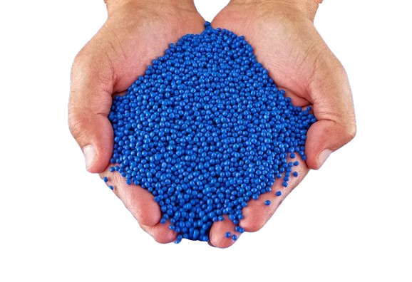
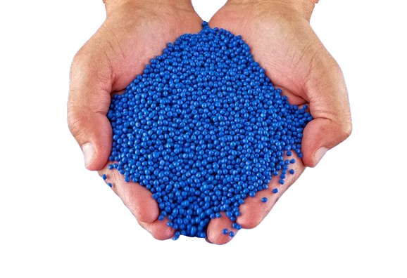

MATÉRIA‑PRIMA 100% RECICLÁVEL
 

Da origem ao produto final, a sustentabilidade é o nosso alicerce na FD Plásticos. Cada item que fabricamos nasce de matéria‑prima 100% reciclável, e essa essência se mantém viva, sem nunca se perder. Nossa paixão por um futuro sem desperdício e nosso respeito pelo meio ambiente são a força motriz por trás de cada uma de nossas ações. Assim, garantimos que cada compra contribua para um ciclo de produção consciente e um planeta mais saudável.